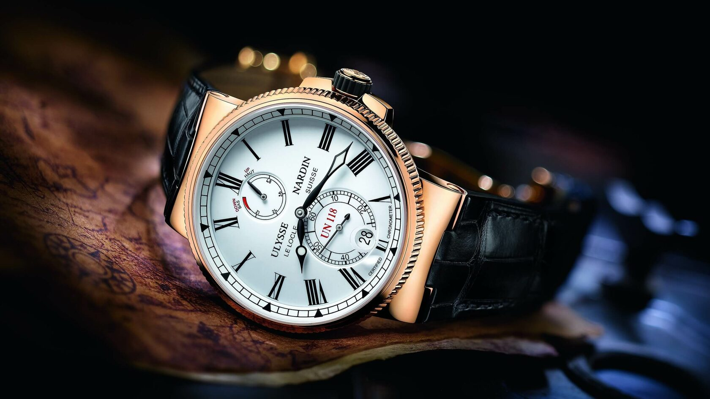

РЕМОНТ ЧАСОВ ЛЮБОЙ СЛОЖНОСТИ
Наш сервисный центр располагает всем необходимым оборудованием швейцарского и немецкого производства для проведения качественного ремонта часов.
Наш сервисный центр располагает всем необходимым оборудованием швейцарского и немецкого производства для проведения качественного ремонта часов.
Сложный ремонт
от 1 000 руб.
Мелкий ремонт
от 1 000 руб.
Полировка
от 1 000 руб.
Починка ремешков и браслетов
от 1 000 руб.
Замена батарейки с сохранением герметичности
от 1 000 руб.
Обслуживание механизма
от 1 000 руб.
Профессионализм и опыт
Наши мастера обладают высокой квалификацией и значительным опытом работы в сфере ремонта и обслуживания часов. Они постоянно совершенствуют свои навыки и знания, чтобы предоставлять клиентам услуги на самом высоком уровне
Широкий спектр услуг
В наших мастерских вы можете получить качественный ремонт и обслуживание всех видов часов - от наручных до настенных и напольных. Мы также предлагаем услуги по замене батареек, ремешков и браслетов, полировке и восстановлению корпусов и стекол
Клиентоориентированность
Мы ценим каждого клиента и стремимся обеспечить отличный уровень обслуживания. Наша команда всегда готова ответить на ваши вопросы и предложить наилучшие решения для вашего индивидуального случая. Мы также предлагаем разумные цены и гарантию на все выполненные работы, чтобы вы чувствовали себя уверенно и доверяли нам свои ценные часы.